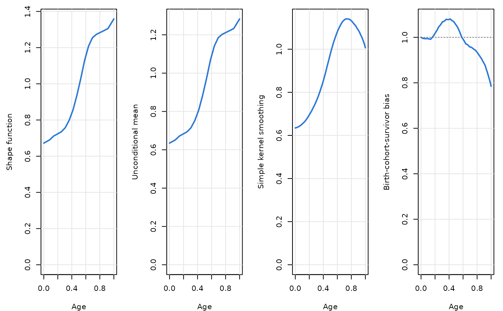
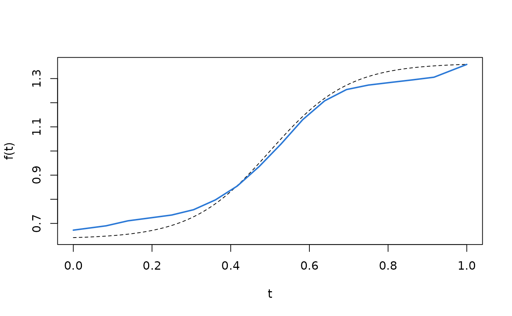
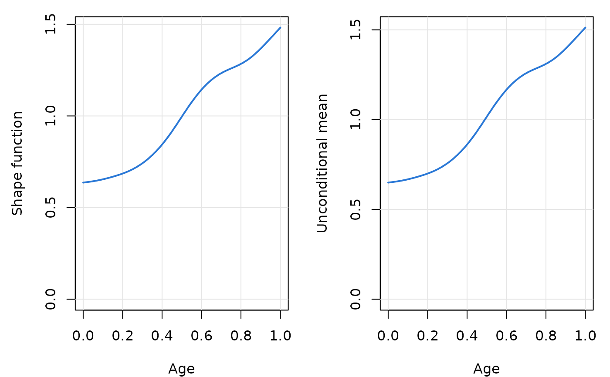

Estimate marker trajectories in the presence of death and delayed entry
Source:R/fit.R
trajchain.RdFits the nonparametric estimators of Hu, Wu, Zhao and Sun for longitudinal cohort studies in which individuals enter at different ages (delayed entry, i.e. left truncation) and are followed until death, dropout or the end of the visit schedule. The function estimates
the shape function \(f(t)\), the common age-related pattern of the trajectory;
\(\mu_{Z^0}(t) = E(Z^0 \mid A^0 = t, T^0 \ge t)\), the mean of the latent variable among survivors entering at age \(t\);
the birth-cohort-survivor bias \(\mu_{Z^0}(t)/\mu_{Z^0}(\tau_0)\);
the unconditional mean trajectory \(\mu_{Z^0}(\tau_0) f(t)\), the mean marker level in the absence of death for the reference subgroup entering at the starting age;
naive Nadaraya–Watson curves, reported for comparison:
nw_baselinesmooths the baseline measurements against the entry age and estimates \(E\{Y(A) \mid A = t\} = \mu_{Z^0}(t) f(t)\), andnw_pooledsmooths all observed measurements against age. Both mix the shape with survivor and birth-cohort selection.
Usage
trajchain(
Y,
entry_age,
visit_gaps,
tau0,
tau1 = NULL,
m = NULL,
grid_step = NULL,
method = c("auto", "chain", "penalized"),
mu_method = c("baseline", "pooled"),
bandwidth = "rot",
bandwidth_mu = "rot",
lambda = "cv",
threshold = 0.6,
constraint = c("anchor", "integral"),
kernel = "epanechnikov",
n_grid = 801,
keep_data = TRUE
)Arguments
- Y
Numeric matrix of marker values with one row per subject and one column per scheduled visit; column 1 is the baseline measurement at study entry. Visits that were not observed (after death, dropout or end of follow-up) are
NA.- entry_age
Numeric vector of ages at study entry (\(A_i\)), one per row of
Y.- visit_gaps
Scheduled time between consecutive visits, on the same scale as
entry_age: a single number for equally spaced visits, or a vector \((v_1, \dots, v_k)\) of lengthncol(Y) - 1. Use the scheduled (rounded) gaps, not observed average gaps.- tau0
Starting age \(\tau_0\) of the trajectory (the target population consists of individuals alive at this age).
- tau1, m
End of the age interval \(\tau_1\), or the number of grid points \(m\); supply one of them. \(\tau_1 - \tau_0\) must be an integer multiple of the grid step.
- grid_step
Spacing \(\delta\) of the grid. The default is the greatest common divisor of
visit_gaps(the visit gap itself when visits are equally spaced). Use a value \(v/q\) to refine the grid for widely spaced visits (Section 5 of the paper).- method
"chain","penalized", or"auto"(the default), which uses"chain"whenever every visit gap equals the grid step and"penalized"otherwise.- mu_method
Estimator of \(\mu_{Z^0}(t)\) reported by default:
"baseline"(equation 5) or"pooled"(equation 6). See the section Estimation of the mean trajectories.- bandwidth
Bandwidth \(h\) of the ratio estimator on the age scale:
"rot"(default, \(\hat\sigma_A n^{-1/6}\)),"cv"(constant chosen bycv_bandwidth()with its default settings), atrajchain_cvobject returned bycv_bandwidth()(to control the cross-validation), or a positive number.- bandwidth_mu
Bandwidth \(h'\) of the mean estimators:
"rot"(default, \(2.34\,\hat\sigma_A n^{-1/5}\)) or a positive number.- lambda
Penalty \(\lambda\) of the penalized estimator:
"cv"(default; five-fold cross-validation over the grid used in the paper, seecv_lambda()), atrajchain_cvobject returned bycv_lambda(), or a non-negative number. Ignored by the chain estimator.- threshold
The constant in \(c^* = \mathrm{threshold} \times n h\), where \(h\) is the ratio bandwidth on the unit time scale, \(h/(\tau_1 - \tau_0)\): ratio estimates based on fewer than \(c^*\) observations receive zero weight in the penalized estimator. The paper uses 0.6.
- constraint
How the penalized problem is normalized:
"anchor"(default; the solution used for the results in the paper) or"integral"(quadratic program with the integral and non-negativity constraints).- kernel
Kernel; see
kernel_function().- n_grid
Number of equally spaced ages in \([\tau_0, \tau_1]\) at which the curves are evaluated (default 801).
- keep_data
Keep a copy of the data in the fitted object. Required by
trajchain_boot();predict.trajchain()uses it to evaluate the mean curves exactly (otherwise it interpolatescurves).
Value
An object of class "trajchain", a list with components
curvesdata frame with the estimates on
n_gridequally spaced ages:t,shape(\(\hat f\)), and for each estimator of \(\mu_{Z^0}\) (suffix_baselineor_pooled) the unconditional meanmean_*, the birth-cohort-survivor biasbias_*, \(\hat\mu_{Z^0}(t)\)mu_*, and the Nadaraya–Watson curvenw_*;griddata frame with the grid points
t, the estimated shape functionshapeand, for the chain estimator, the chained ratiosratio\(= \hat r(u_j, u_{j-1})\);pairsfor the penalized estimator, a data frame describing every ratio constraint (ages, gap, estimated ratio, number of contributing observations
n, whether it was kept, and its weight);mu0\(\hat\mu_{Z^0}(\tau_0)\) for both estimators;
shape_funa function returning \(\hat f(t)\) for \(t \in [\tau_0, \tau_1]\) (
NAoutside);bandwidth,lambda,threshold,method,mu_method,constraint,kernelthe settings used;
designa summary of the design (interval, grid, visit gaps, numbers of subjects and measurements);
cvthe cross-validation objects, when
"cv"was requested;data,settings,callthe data (if
keep_data = TRUE), the internal settings used for refitting, and the call.
Model and assumptions
Let \(\tau_0\) be the starting age of the target population (\(t = 0\) in the paper; age 30 in the ABC-DS application). For an individual alive at \(\tau_0\), let \(Y^0(t)\) be the marker at age \(t\), \(T^0\) the age at death, \(A^0\) the age at potential study entry and \(Z^0 > 0\) a latent variable. The model is $$E\{Y^0(t) \mid Z^0, T^0 = s\} = Z^0 f(t), \qquad \tau_0 \le t \le s,$$ with \(\int_{\tau_0}^{\tau_1} f(t)\,dt = 1\). Individuals are sampled only if alive at entry (\(A^0 \le T^0\)), and \(C\) denotes the last follow-up visit before loss to follow-up for reasons other than death. The estimators rely on
(A1) \(A^0\) is independent of \(\{Y^0(t), t \le s\}\) given \(Z^0\) and \(T^0 = s\): the entry age may depend on the latent variable (birth-cohort effects), but not otherwise on the marker process;
(A2) \(C\) is independent of \((T, Y(\cdot))\) given \((A, Z)\): dropout may depend on the entry age and the latent variable, but not on the marker values themselves or on the time of death beyond what \(Z\) explains.
The distribution of \(Z^0\) and its association with death, entry age and dropout are left unspecified. Under (A1)–(A2) these nuisance factors cancel in the ratios \(f(t)/f(t - v)\), which are therefore identified from pairs of consecutive measurements. Dropout that depends on the marker values (for example, sicker participants leaving the study) violates (A2); the paper's sensitivity analysis found the estimators stable under a mild violation and degraded under a severe one.
Data
Y holds one row per subject and one column per scheduled visit, the first
column being the baseline measurement at entry age \(A_i\); visit \(l\)
is scheduled at age \(A_i + v_1 + \dots + v_l\). Unobserved visits (after
death or dropout) are NA. Survival times and the reason for dropout are
not needed. Subjects may enter before \(\tau_0\); all observed visits are
used. Use visit_matrix() to build Y from long-format data.
Estimation of the shape function
The age interval \([\tau_0, \tau_1]\) is divided into \(m\) subintervals of length \(\delta = (\tau_1 - \tau_0)/m\), whose midpoints \(u_j = \tau_0 + (j - 0.5)\delta\) form the grid.
method = "chain"(Section 3 of the paper) requires equally spaced visits with \(\delta\) equal to the visit gap. The ratios \(\hat r(u_j, u_{j-1})\) ofratio_estimate()are chained, $$\hat f(u_j) = \frac{\prod_{k=2}^{j} \hat r(u_k, u_{k-1})} {\delta \{\sum_{q=2}^{m} \prod_{k=2}^{q} \hat r(u_k, u_{k-1}) + 1\}},$$ so that the midpoint Riemann sum of \(\hat f\) equals one.method = "penalized"(Section 5) handles widely spaced visits (a grid finer than the visit gap) and unequally spaced visits (grid step equal to the greatest common divisor of the gaps). For every gap \(v_l\) and every pair of grid points with \(u_j - u_{j'} = v_l\), the ratio \(\hat r(u_j, u_{j'})\) is estimated; the grid values \(g(u_j)\) minimize $$\sum_{(j, j')} \hat w_{j j'} \{g(u_j) - \hat r(u_j, u_{j'}) g(u_{j'})\}^2 + \lambda m^3 \sum_{j=2}^{m-1} \{g(u_{j-1}) - 2 g(u_j) + g(u_{j+1})\}^2,$$ where \(\hat w_{jj'} = n_{jj'} I(n_{jj'} \ge c^*) / \sum n I(n \ge c^*)\), \(n_{jj'}\) is the number of observations contributing to the ratio and \(c^* = \)threshold\(\times\, n h\). Both \(h\) in \(c^*\) and the penalty are computed on the unit time scale \((t - \tau_0)/(\tau_1 - \tau_0)\), so thatlambdais dimensionless and comparable across studies. Ratios whose kernel window contains no observed pair are undefined and are dropped. Withconstraint = "anchor"(the authors' implementation) the quadratic form is minimized with \(g(u_1)\) fixed and the solution is rescaled to integrate to one; withconstraint = "integral"it is solved as a quadratic program under the constraints \(\delta \sum_j g(u_j) = 1\) and \(g(u_j) \ge 0\), as written in Section 5 of the paper. With equally spaced visits, a grid step equal to the visit gap,lambda = 0andthreshold = 0, the anchored penalized estimator reduces to ratio chaining.
In both cases \(\hat f\) is extended to \([\tau_0, \tau_1]\) by linear interpolation between grid points and linear extrapolation of the first and last segments.
Estimation of the mean trajectories
With \(\hat f\) available, \(\mu_{Z^0}(t)\) is estimated by
mu_method = "baseline": equation (5), \(\hat\mu_{Z^0}(t) = \sum_i K_{h'}(t - A_i) Y_i(A_i) / \{\hat f(t) \sum_i K_{h'}(t - A_i)\}\), which uses the baseline measurements only and is valid under (A1)–(A2), i.e. in the presence of birth-cohort effects (used for the ABC-DS analysis);mu_method = "pooled": equation (6), the same estimator pooling all observed visits. It requires the stronger assumption (A2') that dropout is independent of \((T, Y(\cdot), Z)\) given \(A\), and it approximates \(\mu_{Z^0}(t)\) when the visit gaps are small; in the presence of birth-cohort effects and wider gaps it mixes subjects who entered at different ages. It was used in the simulations of the paper, which have no birth-cohort effect.
Both versions are always computed and stored; mu_method only selects the
one shown by default in print(), summary() and plot(). The unconditional
mean and the bias curve are anchored at \(\tau_0\) through
\(\hat\mu_{Z^0}(\tau_0)\), so they inherit the uncertainty of the
estimates at the starting age; trajchain() warns when \(\hat f\) is not
positive somewhere in \([\tau_0, \tau_1]\), when
\(\hat\mu_{Z^0}(\tau_0)\) cannot be computed, or when fewer than 10
measurements lie within one bandwidth \(h'\) of \(\tau_0\).
Tuning parameters
By default the ratio bandwidth is \(h = \hat\sigma_A n^{-1/6}\) (the
"small bandwidth" of the paper) and the mean bandwidth is
\(h' = 2.34\,\hat\sigma_A n^{-1/5}\), where \(\hat\sigma_A\) is the sample
standard deviation of the entry ages; these are the bandwidths of the
authors' simulation and data-analysis code. Use bandwidth = "cv" (or the
output of cv_bandwidth()) to choose the constant \(\kappa\) in
\(h = \kappa \hat\sigma_A n^{-1/6}\) by five-fold cross-validation, and
lambda = "cv" (or the output of cv_lambda()) to choose the penalty of
the penalized estimator.
References
Hu, P., Wu, Y., Zhao, Y. and Sun, Y. Nonparametric estimation of marker trajectories in the presence of death and delayed entry. Manuscript under revision at Biometrika.
See also
trajchain_boot() for bootstrap standard errors and confidence
bands, cv_bandwidth() and cv_lambda() for tuning, plot.trajchain()
and plot_trajectories() for graphics, simulate_cohort() for data from
the simulation designs of the paper.
Examples
# Equally spaced visits (Section 3): simulated data from the paper's design
sim <- simulate_cohort(n = 1000, shape = "monotone", seed = 2026)
fit <- trajchain(sim$Y, sim$entry_age, sim$visit_gaps, tau0 = 0, tau1 = 1,
mu_method = "pooled")
fit
#> <TrajChain fit>
#> Shape estimator : ratio chaining (Section 3)
#> Mean estimator : all observed visits (equation 6)
#> Subjects : 1000, with 2967 measurements (2.97 per subject)
#> Visit gaps : 0.05556, equally spaced (5 follow-up visits)
#> Age interval : [0, 1], m = 18 grid points (step 0.05556)
#> Bandwidths : h = 0.1087 (ratio), h' = 0.2021 (mean)
#>
#> age shape mean bias nw
#> 0.0 0.6722 0.6347 1.0000 0.6347
#> 0.2 0.7239 0.6836 1.0174 0.6955
#> 0.4 0.8376 0.7910 1.0787 0.8533
#> 0.6 1.1535 1.0893 0.9918 1.0804
#> 0.8 1.2828 1.2113 0.9345 1.1319
#> 1.0 1.3585 1.2829 0.7847 1.0067
plot(fit)

# compare with the true shape function
curve(shape_monotone(x), 0, 1, lty = 2, ylab = "f(t)", xlab = "t")
lines(fit$curves$t, fit$curves$shape, col = "#2a78d6", lwd = 2)

# \donttest{
# Unequally spaced visits (Section 5), penalty chosen by cross-validation
sim3 <- simulate_cohort(n = 1000, visit_gaps = "unequal", seed = 7)
fit3 <- trajchain(sim3$Y, sim3$entry_age, sim3$visit_gaps, tau0 = 0, tau1 = 1,
mu_method = "pooled")
fit3$lambda
#> [1] 1.467799e-05
plot(fit3, which = c("shape", "mean"))

# }